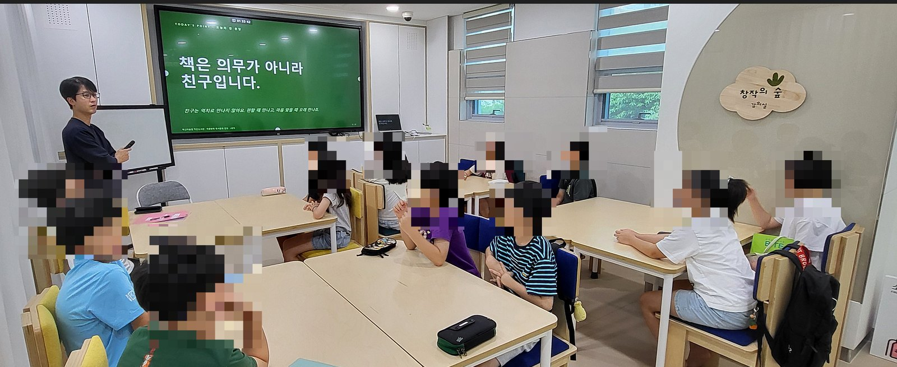
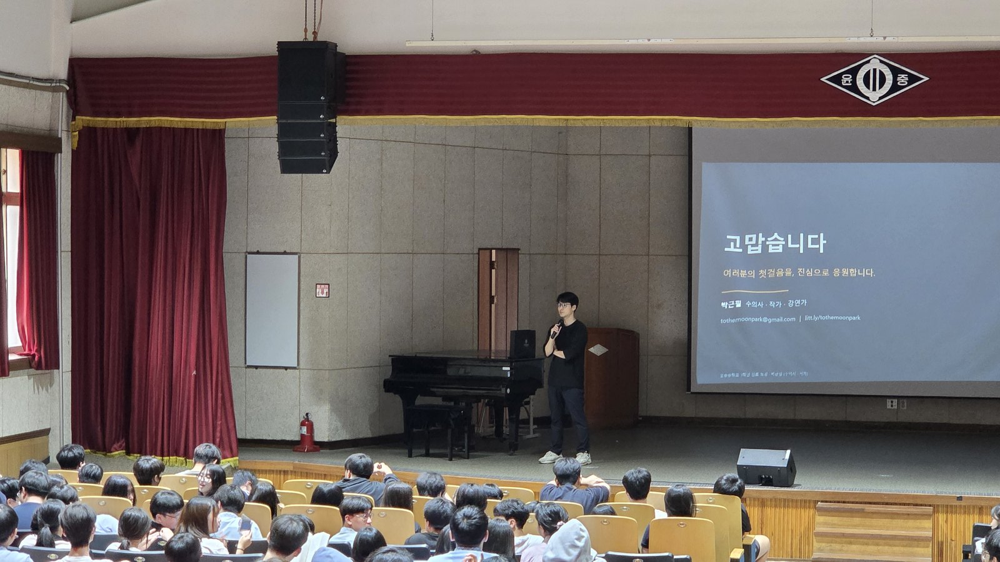
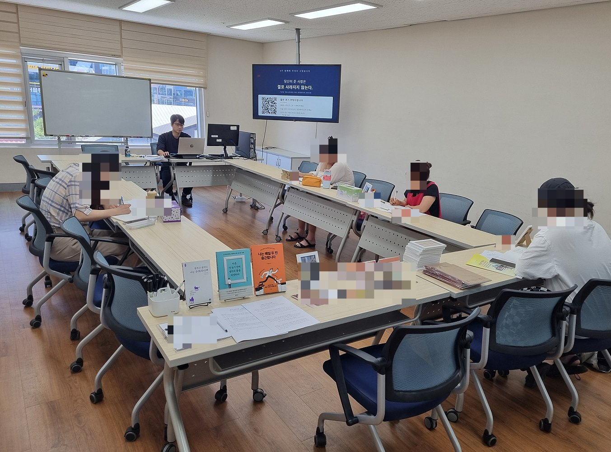
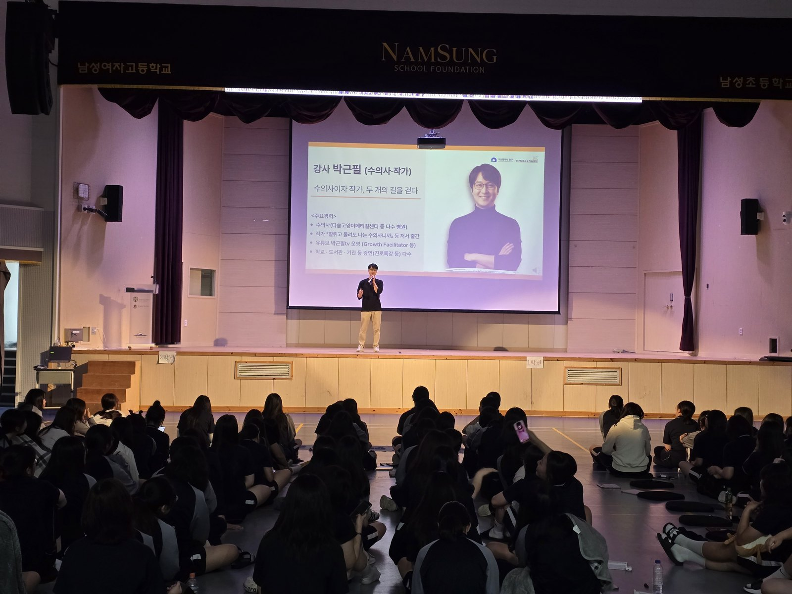
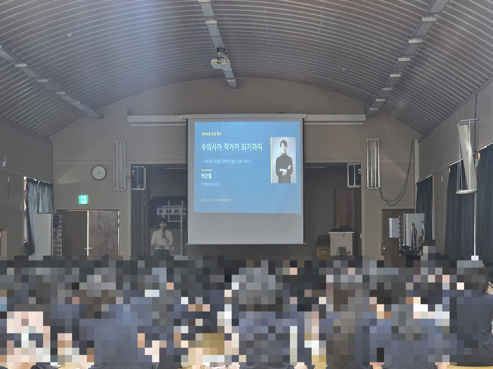
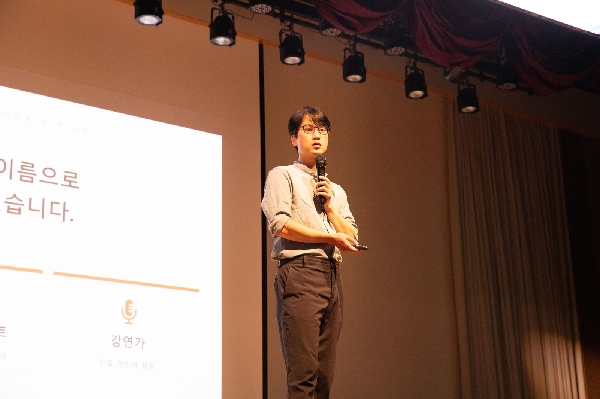
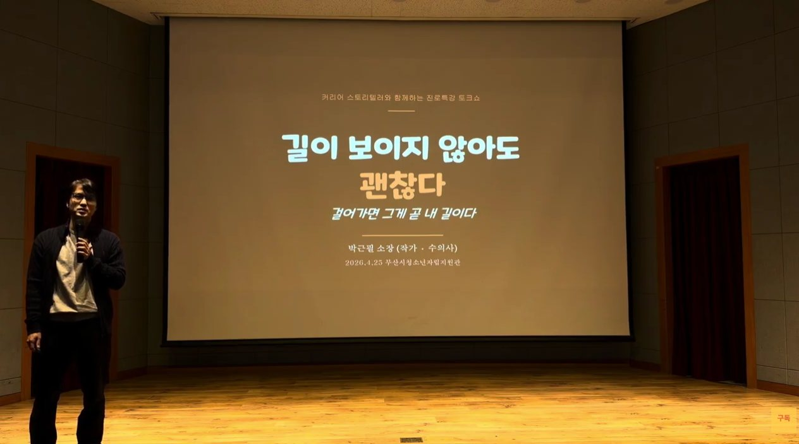
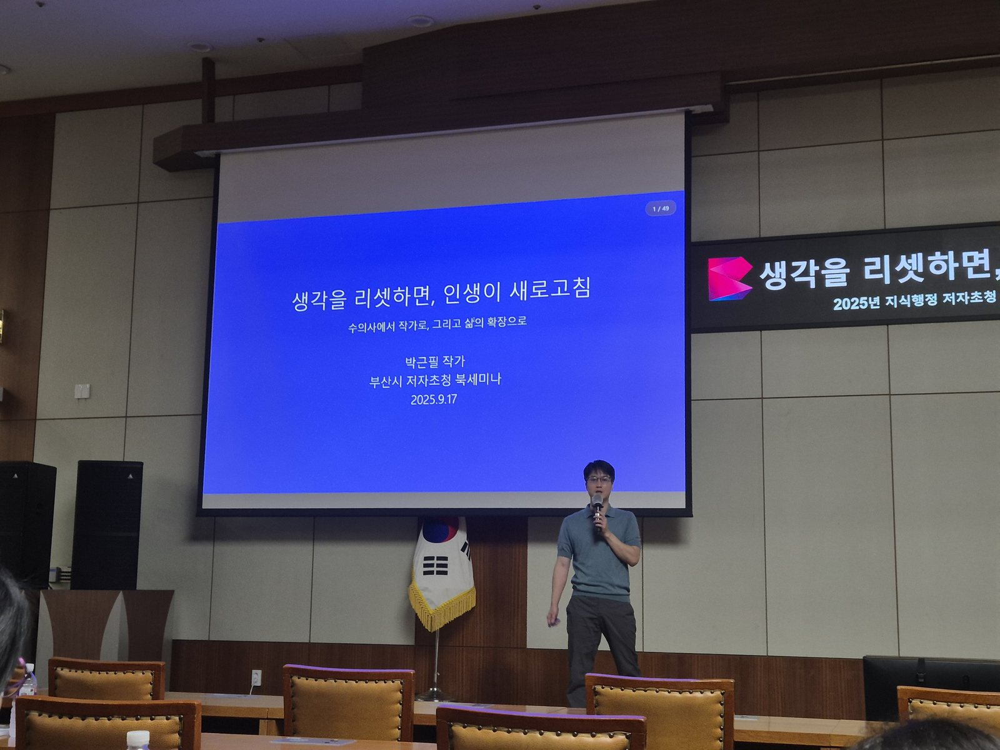

펫로스
전북대학교 수의과대학 「2026 반려동물 한마당」 펫로스 강연
전북대학교 수의과대학 제38대 학생회 「다온」이 주최한 행사에서 「지금 함께하는 시간을 더 잘 사랑하는 법과 건강한 이별 준비」를 주제로 강연했습니다. 부제는 펫로스 치유 글쓰기입니다. 수의사 전문지 데일리벳 현장 보도에 따르면 이날 행사에는 약 1,600명이 참여했습니다.
이런 강연이 필요하시면 문의하기 →학교 진로 특강부터 도서관 연속 과정, 공공기관까지 — 실제로 다녀온 자리를 날짜순으로 모았습니다.
기록마다 후기·영상·보도를 함께 걸어 두었습니다.
전북대학교 수의과대학 제38대 학생회 「다온」이 주최한 행사에서 「지금 함께하는 시간을 더 잘 사랑하는 법과 건강한 이별 준비」를 주제로 강연했습니다. 부제는 펫로스 치유 글쓰기입니다. 수의사 전문지 데일리벳 현장 보도에 따르면 이날 행사에는 약 1,600명이 참여했습니다.
이런 강연이 필요하시면 문의하기 →
읽기, 문해력, 질문, 쓰기 순서로 4주를 이어 갔고 4회 모두 마쳤습니다. 마지막 날에는 수강생이 손편지를 남겼습니다.
이런 강연이 필요하시면 문의하기 →

「안녕, 나의 반려동물 — 추억과 이별을 쓰는 펫로스 치유 글쓰기」라는 이름으로, 성인 수강생과 4주 동안 함께 썼습니다. 세계일보 연재 「펫 상실학 개론」에서 펫로스 케어의 한 방식으로 소개되었습니다.
이런 강연이 필요하시면 문의하기 →


영도도서관이 연계한 「찾아가는 작가 강연」으로 전교생 414명 앞에 섰습니다.
이런 강연이 필요하시면 문의하기 →
「길라job이」 진로 특강에서 「길이 보이지 않아도 괜찮다 — 걸어가면 그게 곧 내 길이다」를 주제로 이야기했습니다.
이런 강연이 필요하시면 문의하기 →
FAQ
학교, 도서관, 공공기관, 대학 행사에서 강연합니다. 전국 초·중·고 38개교에서 진로 특강을 했고, 김해율하도서관과 혁신어울림 작은도서관에서는 4회 연속 과정을 진행했습니다. 부산시청 공무원 200여 명 대상 북세미나, 부산시청소년자립지원관 진로 특강, 전북대학교 수의과대학 「반려동물 한마당」 펫로스 강연도 했습니다.
한 자리에서 가장 많이 만난 인원은 부산영상예술고등학교 전교생 414명입니다. 유락여자중학교에서는 2·3학년 550명을 강당 규모에 맞춰 학년별로 나눠 만났고, 남성여자고등학교 1·2학년 210여 명 앞에서도 강연했습니다. 도서관 연속 과정처럼 열다섯 명 안팎이 둘러앉는 자리도 꾸준히 엽니다.
문의 페이지에서 대상, 인원, 희망 날짜를 알려 주시면 됩니다. 그 자리에 맞춘 구성안을 먼저 만들어 보내 드립니다. 주제가 정해지지 않았어도 괜찮습니다.